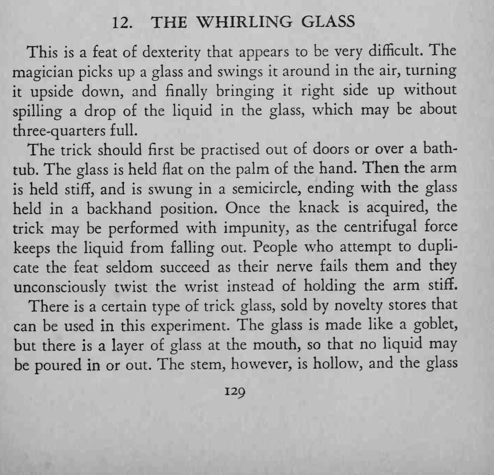
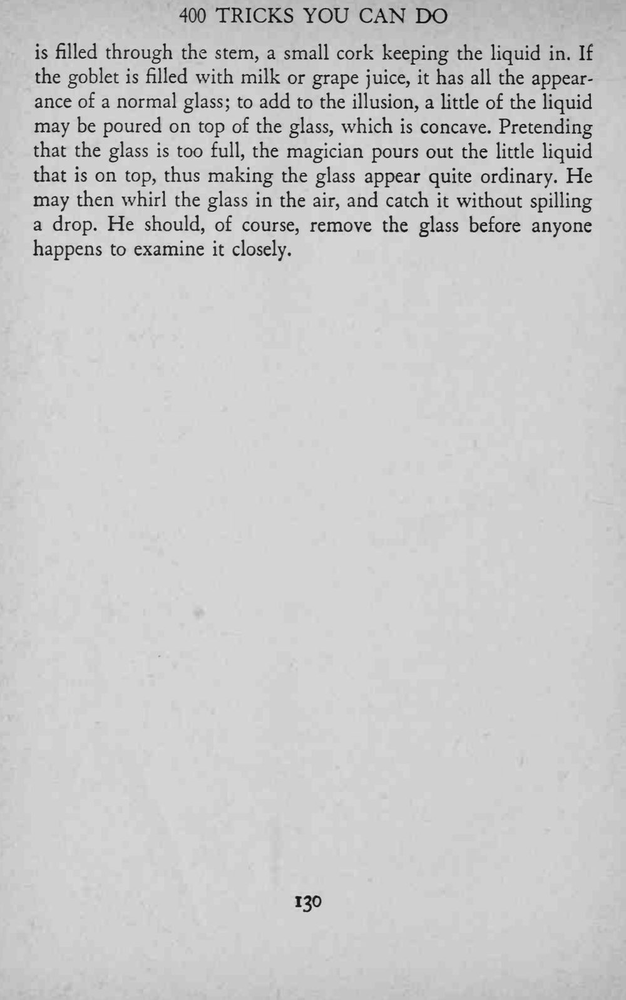
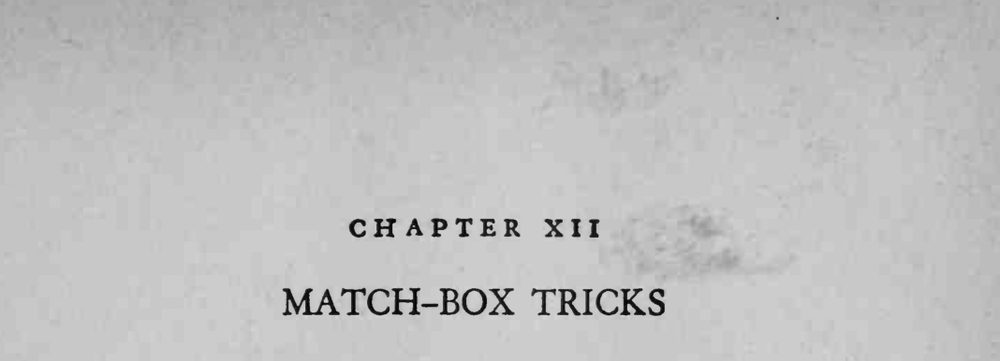

魔术师拿起一只装了大半杯水的杯子在空中挥转，杯子被倒过来又转回正位，竟一滴水都没有洒出来。
关键是把手臂绷直、靠离心力，千万别用手腕去翻。



This is a feat of dexterity that appears to be very difficult. The magician picks up a glass and swings it around in the air, turning it upside down, and finally bringing it right side up without spilling a drop of the liquid in the glass, which may be about three-quarters full. The trick should first be practised out of doors or over a bathtub. The glass is held flat on the palm of the hand. Then the arm is held stiff, and is swung in a semicircle, ending with the glass held in a backhand position. Once the knack is acquired, the trick may be performed with impunity, as the centrifugal force keeps the liquid from falling out. People who attempt to duplicate the feat seldom succeed as their nerve fails them and they unconsciously twist the wrist instead of holding the arm stiff. There is a certain type of trick glass, sold by novelty stores that can be used in this experiment. The glass is made like a goblet, but there is a layer of glass at the mouth, so that no liquid may be poured in or out. The stem, however, is hollow, and the glass is filled through the stem, a small cork keeping the liquid in. If the goblet is filled with milk or grape juice, it has all the appearance of a normal glass; to add to the illusion, a litde of the liquid may be poured on top of the glass, which is concave. Pretending that the glass is too full, the magician pours out the little liquid that is on top, thus making the glass appear quite ordinary. He may then whirl the glass in the air, and catch it without spilling a drop. He should, of course, remove the glass before anyone happens to examine it closely.